<!DOCTYPE html>
<html lang="pt-BR"></html>
    <head>
        <meta charset="UTF-8">
        <meta name="viewport" content="width=device-width, initial-scale=1.0">
        <link rel="stylesheet" href="assets/desktop.css" media="screen and (min-width:1024px)">
        <link rel="stylesheet" href="assets/tablet.css" media="screen and (min-width:768px) and (max-width:1023px)">
        <link rel="stylesheet" href="assets/mobile.css" media="screen and (max-width:767px)">
        <!--Favicon em SVG-->
        <link rel="icon" type="image/svg+xml" href="">
        <!--Favicon em PNG-->
        <link Rel="icon" type="image/png" size="32x32" href="">
        <link Rel="icon" type="image/png" size="192x192" href="">
        <link rel="apple-touch-icon" size="180x180" href="">
        <meta name="msapplication-tileImage" content = "">
        <!-- Pré-conexão para otimizar DNS/TLS -->
        <link rel="preconnect" href="https://fonts.googleapis.com">
        <link rel="preconnect" href="https://fonts.gstatic.com" crossorigin>

        <!-- Preload para garantir carregamento antecipado -->
        <link rel="preload" href="https://fonts.googleapis.com/css2?family=Montserrat:wght@200;400;500;600;700;800&display=swap" as="style" onload="this.onload=null;this.rel='stylesheet'">

        <!-- Fallback se JS estiver desativado -->
        <noscript>
         <link rel="stylesheet" href="https://fonts.googleapis.com/css2?family=Montserrat:wght@200;400;500;600;700;800&display=swap">
        </noscript>
        <!--Otimização para SEO-->
        <meta name="robots" content="index, follow, max-image-preview:large, max-snippet:-1, max-video-preview:-1">
        <title>Cover Up Mestre  Lenk Tattoo </title>
        <meta name="description" content="Cover up profissional em Santo André com Mestre Lenk. Cobertura de tatuagens em vários estilos: blackwork, oriental, geek, old school...">
        <link rel="canonical" href="https://coverupmestrelenk.vieiraelenk.com/">
        <!--SEO Social-->
        <meta property="og:locale" content="pt_BR">
        <meta property="og:type" content="website"><meta property="og:title" content="Cover up Mestre Lenk Tattoo">
        <meta property="og:description" content="Cover up profissional em Santo André com Mestre Lenk. Cobertura de tatuagens em vários estilos: blackwork, oriental, geek, old school...">
        <meta property="og:url" content="https://coverupmestrelenk.vieiraelenk.com/">
        <meta property="og:site_name" content="Cover up Mestre Lenk Tattoo">
        <meta property="article:modified_time" content="2026-06-26T19:41:11+00:00"> <!--Atualizar data e hora sempre que houver mudanças significativas-->
        <meta property="og:image" content="https://coverupmestrelenk.vieiraelenk.com/wp-content/uploads/2025/11/dobra02_imagem01_mestrelenk_coberturatattoo_coberturaantes_tatuagem_tattoo_coverup_lenktattoo_lenk.webp">
        <meta property="og:image:width" content="256">
        <meta property="og:image:height" content="392">
        <meta property="og:image:type" content="image/webp">
        <meta name="twitter:card" content="summary_large_image">
    </head>
    <body>
        <header>
            <div class="navBardesktop">
                <!--Logotipo VL-->
                <a href="#home" class="logotipo">
                    
                </a>
                <!--NavBar-->
                <nav class="navbar">
                    <ul>
                        <li><a href="#sobreomestre">Sobre o Mestre</a></li>
                        <li><a href="#galeria">Galeria</a></li>
                        <li><a href="#coment">Comentários</a></li>
                        <li><a href="#contato">contato</a></li>
                    </ul>
                </nav>
            </div>
            <div class="navBarmobile">
                <!--Logotipo VL-->
                <a href="#home" class="logotipo">
                    
                </a>
                <!--Navbar mobile Hamburguer-->
                <button class="menu_hamb" id="btnMenu" aria-label="Abrir menu de navegação">
                    <span class="f_menuhamb"></span>
                    <span class="f_menuhamb"></span>
                    <span class="f_menuhamb"></span>
                </button>
                <!--Abertura o icone e menu-->
                <nav class="navMobile" id="nav_mobile">
                    <ul>
                        <li><a href="#home">Inicio</a></li>
                        <li><a href="#sobreomestre">Sobre o Mestre</a></li>
                        <li><a href="#galeria">Galeria</a></li>
                        <li><a href="#coment">Comentários</a></li>
                        <li><a href="#contato">Contato</a></li>
                    </ul>
                </nav>
            </div>
        </header>
        <main>
            <section id="home" class="hero">
                <div class ="cont_texthero">
                    <h1>Especialista em Cover Up | Estúdio de Tatuagem Santo André - SP</h1>
                    <h2>RECUPERE A CONFIANÇA E PARE DE ESCONDER AQUELA TATUAGEM</h2>
                    <h3>Especialista Referência em Coberturas Complexas e Técnicas Avançadas</h3>
                    <p>Aquela tatuagem que te incomoda toda vez que você olha no espelho não precisa ser permanente. Por meio de técnicas avançadas de cobertura e anos de experiência, ofereço soluções definitivas para transformar arrependimentos em arte que você vai ter orgulho de mostrar.</p>
                    <div class="btn_whats">
                        <button id="btnwhatsapp">AGENDE SUA CONSULTA GRATUITA</button>
                        
                    </div>
                </div>
            </section>
            <section class="barserv">
                <div class="skills">
                    <span class="icon"></span>
                    <span class="tx_skill">COVER UP</span>
                    <span class="icon"></span>
                    <span class="tx_skill">BLACKWORK</span>
                    <span class="icon"></span>
                    <span class="tx_skill">NEWTRADICIONAL</span>
                    <span class="icon"></span>
                    <span class="tx_skill">REALISMO</span>
                    <span class="icon"></span>
                    <span class="tx_skill">OLD SCHOOL</span>
                    <span class="icon"></span>
                    <span class="tx_skill">ORIENTAL</span>
                    <span class="icon"></span>
                    <span class="tx_skill">FINE LINE</span>
                    <span class="icon"></span>
                    <span class="tx_skill">FULL COLOR</span>
                    <span class="icon"></span>
                    <span class="tx_skill">AQUARELA</span>
                    <span class="icon"></span>
                    <span class="tx_skill">GEEK</span>
                    <span class="icon"></span>
                    <span class="tx_skill">RASTELADO</span>
                    <span class="icon"></span>
                    <span class="tx_skill">MANDALA</span>
                    <span class="icon"></span>
                    <span class="tx_skill">LETTERING</span>
                    <span class="icon"></span>
                    <span class="tx_skill">COVER UP</span>
                    <span class="icon"></span>
                    <span class="tx_skill">BLACKWORK</span>
                    <span class="icon"></span>
                    <span class="tx_skill">NEWTRADICIONAL</span>
                    <span class="icon"></span>
                    <span class="tx_skill">REALISMO</span>
                    <span class="icon"></span>
                    <span class="tx_skill">OLD SCHOOL</span>
                    <span class="icon"></span>
                    <span class="tx_skill">ORIENTAL</span>
                    <span class="icon"></span>
                    <span class="tx_skill">FINE LINE</span>
                    <span class="icon"></span>
                    <span class="tx_skill">FULL COLOR</span>
                    <span class="icon"></span>
                    <span class="tx_skill">AQUARELA</span>
                    <span class="icon"></span>
                    <span class="tx_skill">GEEK</span>
                    <span class="icon"></span>
                    <span class="tx_skill">RASTELADO</span>
                    <span class="icon"></span>
                    <span class="tx_skill">MANDALA</span>
                    <span class="icon"></span>
                    <span class="tx_skill">LETTERING</span>
                </div>
            </section>
            <section class="porque">
                <div class="pq_format">
                    <div class="format01">
                        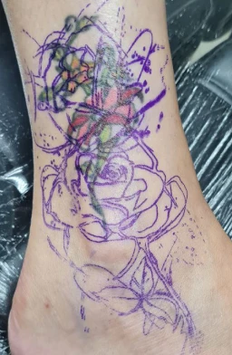
                        <p>Em outras palavras, Cada projeto é único e planejado estrategicamente para cobrir 100% do trabalho anterior.</p>
                    </div>
                    <div class="format02">
                        <h2><span class="colortxt">TRANSFORMO TATUAGENS</span> antigas, desbotadas ou que simplesmente não te representam mais <span class="colortxt">EM DESIGNS COMPLETAMENTE NOVOS</span>.</h2>
                        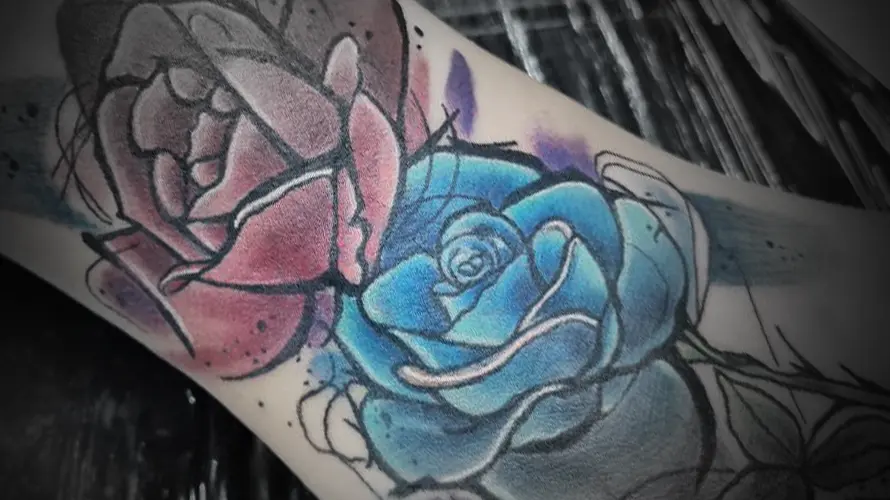
                    </div>
                </div>
            </section>
            <section class="valid_tbl">
                <div class="txt_valid">
                    <h2>Além disso, meus <span class="colortxt">TRABALHOS EM FULL COLOR</span> trazem vida e profundidade para criar peças <span class="colortxt">QUE IMPRESSIONAM</span>.</h2>
                    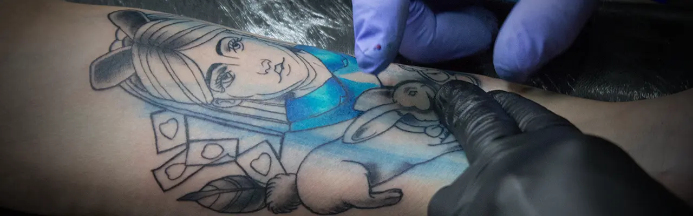
                    <p>Cores vibrantes, sombreados perfeitos e transições suaves.</p>
                    <div class="info_tbl">
                        <h3>Designs em <b>PRETO SÓLIDO COM IMPACTO VISUAL</b> poderoso.</h3>
                        <p>Perfeito para coberturas complexas e para quem busca um estilo autoral.</p>
                    </div>
                </div>
            </section>
            <section class="backgroundsobre" id="sobreomestre">
                <div class="sobre_lenk">
                    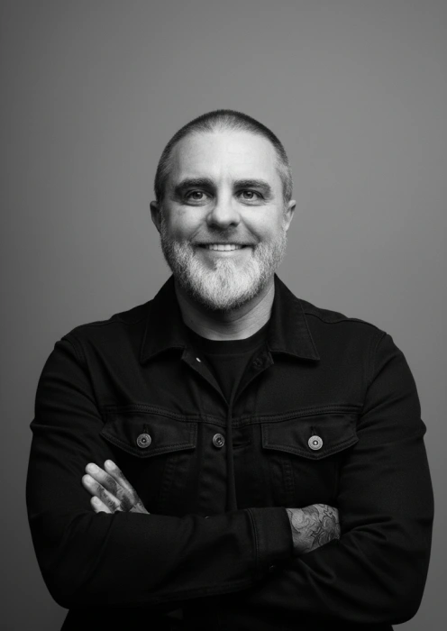
                    <div class="txt_sobrelenk">
                        <h2>QUEM SOU EU</h2>
                        <p> Sou Mestre Lenk, graduado em artes e tatuador há mais de 37 anos. Além disso, leciono na área de tatuagem há 20 anos, formando novos profissionais.
                            “Quando vi meu pai com uma tatuagem, percebi que aquela arte gravada na pele era, talvez, a mais bela forma de expressão que o ser humano já inventou.”
                            Desde os 16 anos, comecei a desenhar profissionalmente, aprendi aerografia e trabalhei com pintura automotiva. Logo depois, formei-me em educação artística e dei aulas em escolas públicas.
                            Entretanto, meu coração sempre bateu pelas tattoos, e decidi dedicar-me inteiramente a elas.</p>
                        <p>Especializei-me em coberturas e reformas de tatuagens antigas ou mal feitas, pois muitas pessoas carregavam essa dor. Como resultado, hoje ofereço soluções que devolvem autoestima e confiança.</p>
                        <p>“A satisfação de ver uma pessoa sair daqui chorando de alegria por poder voltar a sentir-se bem consigo mesma é indescritível.”</p>  
                        <p>"Tatuar é minha missão de vida."</p>
                    </div>
                </div>
            </section>
            <section class="background_skill">
                <div class="grid_skill">
                    <div class="cont_skill">
                        <h4>Especialização em Casos Complexos</h4>
                        <p>Anos de experiência resolvendo coberturas desafiadoras que outros profissionais não aceitam.</p>
                    </div>
                    <div class="cont_skill">
                        <h4>Planejamento Personalizado</h4>
                        <p>Cada projeto passa por uma análise detalhada. Estudamos juntos a melhor solução para o seu caso específico.</p>
                    </div>
                    <div class="cont_skill">
                        <h4>Técnicas Avançadas</h4>
                        <p>Domínio de diferentes estilos e técnicas para garantir o melhor resultado, independente da complexidade.</p>
                    </div>
                    <div class="cont_skill">
                        <h4>Higiene e Segurança</h4>
                        <p>Estúdio com protocolos rigorosos de esterilização e materiais descartáveis de primeira linha.</p>
                    </div>
                    <div class="cont_skill">
                        <h4>Acompanhamento Completo</h4>
                        <p>Suporte durante todo o processo de cicatrização e retoques inclusos quando necessário.</p>
                    </div>
                </div>
            </section>
            <section class="precess">
                <div class="backgroundwhite">
                    <h2>COMO FUNCIONA O PROCESSO</h2>
                </div>
                <section class="backgroundimg">
                    <div class="passoapasso">
                        <h3>CONSULTA INICIAL</h3>
                        <p>Primeiramente, analisamos a tatuagem atual e conversamos sobre suas expectativas e ideias.</p>
                        <h3>PLANEJAMENTO</h3>
                        <p>Em seguida, desenvolvemos o projeto personalizado com referências visuais e ajustes até sua aprovação.</p>
                        <h3>SESSÃO(ÕES)</h3>
                        <p>Depois, realizamos a execução da tatuagem com todo conforto e cuidado que você merece.</p>
                        <h3>ACOMPANHAMENTO</h3>
                        <p>E por fim, oferecemos orientações de cuidados pós-tatuagem e suporte até a cicatrização completa.</p>
                    </div>
                </section>
            </section>
            <section class="comentarios" id="coment">
                <div class="format_coment">
                    <a href="https://maps.app.goo.gl/gRzxEKhT6Hv5Hxtm8" target="_blank" class="classificacao">
                        <article class="depoimento">
                            
                            <div class="cont_stars">
                                <span class="stars"></span>
                                <span class="stars"></span>
                                <span class="stars"></span>
                                <span class="stars"></span>
                                <span class="stars"></span>
                            </div>
                            <p><b>Victor Amorim</b></p>
                            <p>Encontrei o Mestre Lenk no google para fazer uma cobertura na mao. Assim que fui no studio ja vi que o cara era diferenciado, foi muito sincero com.o que dava pra fazer, criou alguns desenhos e o resultado foi muito mais que o esperado, realmente  fiquei muito feliz com o resultado o cara é foda, ja tenho outra tatuagem marcada, recomendo demais, profissional de respeito</p>
                        </article>
                    </a>
                    <a href="https://maps.app.goo.gl/9ubsbCFAbwq6H8wFA" target="_blank" class="classificacao">
                        <article class="depoimento">
                            
                            <div class="cont_stars">
                                <span class="stars"></span>
                                <span class="stars"></span>
                                <span class="stars"></span>
                                <span class="stars"></span>
                                <span class="stars"></span>
                            </div>
                            <p><b>Hector Ribeiro</b></p>
                            <p>Muito obrigado ao Lenk tattoo. um ser humano maravilhoso que fez uma linda tatto ..só tenho agradecer ao Lenk  e a esposa. pessoas  maravilhosas... obrigado .. homenagem a minha filha..</p>
                        </article>
                    </a>
                    <a href="https://maps.app.goo.gl/ZBRuaqDEeHcZ63pw9" target="_blank" class="classificacao">
                        <article class="depoimento">
                            
                            <div class="cont_stars">
                                <span class="stars"></span>
                                <span class="stars"></span>
                                <span class="stars"></span>
                                <span class="stars"></span>
                                <span class="stars"></span>
                            </div>
                            <p><b>Paulo Campos</b></h5>
                            <p>O estúdio é simplesmente sensacional! Além do atendimento impecável e do talento absurdo no trabalho, entrar na sala é como atravessar um portal para um verdadeiro universo geek. Tem personagem pra todo lado… parece que você está dentro da nave da Star Wars esperando o Darth Vader aparecer para fazer orçamento de tattoo ...</p>
                        </article>
                    </a>
                </div>
            </section>
            <section class="galeria" id="galeria">
                <div class="format_galeria">
                    <h2>GALERIA</h2>
                    <div class="grid_galeria">
                        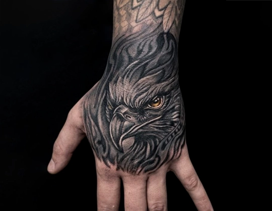
                        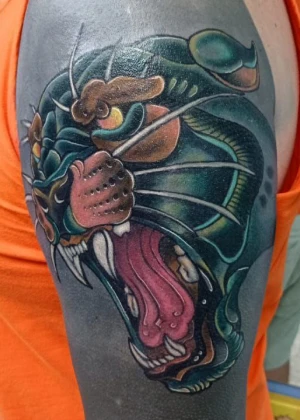
                        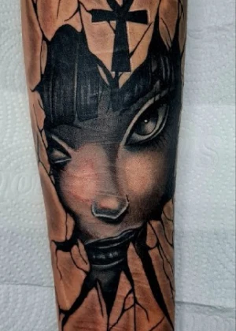
                    </div>
                    <div class="grid_galeria2">
                        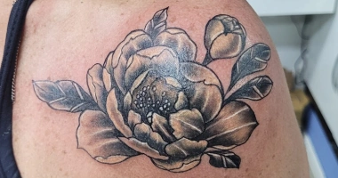
                        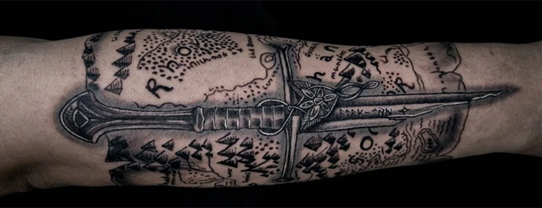
                    </div>
                    <div grid class="grid_galeria3">
                        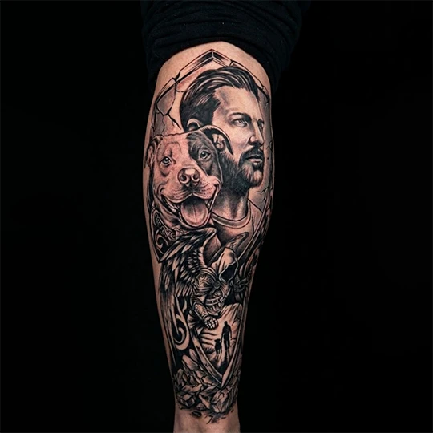
                        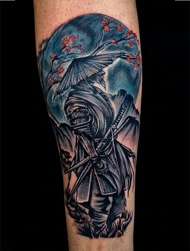
                        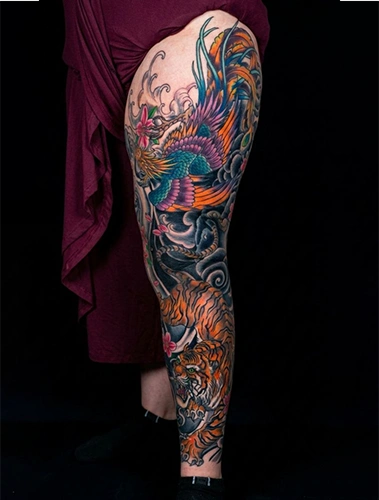
                    </div>
                    <p>Encontre mais dos meus trabalhos aqui</p>
                    <a href="https://www.instagram.com/mestrelenk/" target="_blank" class="linkinst">
                        
                        <p>@mestrelenk</p>
                    </a>
                </div>
            </section>
            <section class="cta">
                <div class="backgroundgreen">
                    <h2>PRONTO PARA SUA TRANSFORMAÇÃO</h2>
                    <p>Não deixe que uma tatuagem do passado continue te incomodando. Agende sua consulta e descubra todas as possibilidades para o seu caso.</p>
                </div>
            </section>
            <section class="background_cta">
                <div class="btn_whats">
                    <button id="btnwhatsapp2">AGENDE SUA CONSULTA GRATUITA</button>
                        
                </div>
            </section>
            <section class="faq">
                <div class="txt_faq">
                    <details>
                        <summary><h2>FAQ</h2></summary>
                        <div class="cont_faq">
                            <h3>Toda tatuagem pode ser coberta?</h3>
                            <p>Na maioria dos casos, sim. Entretanto, avalio especificamente o seu caso na consulta e apresento as melhores opções.</p>
                            <h3>Preciso fazer remoção a laser antes?</h3>
                            <p>Na maioria das vezes, não. Coberturas bem planejadas dispensam o laser, economizando tempo e dinheiro.</p>
                            <h3>Quanto tempo leva?</h3>
                            <p>Depende do tamanho e complexidade. Pode ser feito em uma única sessão ou dividido em várias, sempre priorizando a qualidade.</p>
                            <h3>É mais caro que uma tatuagem normal?</h3>
                            <p>Sim, pois exige mais planejamento e técnica. Contudo, o investimento vale cada centavo quando você vê o resultado.</p>
                            <h3>Dói mais que uma tatuagem comum?</h3>
                            <p>A sensação é similar. Além disso, utilizo técnicas que minimizam o desconforto e fazemos pausas quando necessário.</p>
                        </div>
                    </details>
                </div>      
            </section>
            <section class="contato" id="contato">
                <div class="format_cont">
                    <div class="txt_contat">
                        <h2>ONDE FICA O STUDIO?</h2>
                        <p>Estúdio localizado em Santo André.</p>
                        <p>Próximo a estação Prefeito Saladino (10min)</p>
                        <h3>Horário de Funcionamento:</h3>
                        <p>Terça a sexta: 11h00 às 20h00</p>
                        <p>Sábados: 11h00 às 20h00</p>
                        <p>Domingo: Fechado</p>
                    </div>
                    <div class="google_maps">
                        <iframe src="https://www.google.com/maps/embed?pb=!1m18!1m12!1m3!1d3654.816742127978!2d-46.54369!3d-23.6467331!2m3!1f0!2f0!3f0!3m2!1i1024!2i768!4f13.1!3m3!1m2!1s0x94ce42c314104eb5%3A0xcd02a9f822b7fc5b!2sLenk%20Tattoo%20-%20Est%C3%BAdio%20de%20Tatuagem%20e%20Piercing!5e0!3m2!1spt-BR!2sbr!4v1779914730128!5m2!1spt-BR!2sbr"
                        allowfullscreen=""
                        loading="lazy"
                        referrerpolicy="no-referrer-when-downgrade"
                        title="Mapa mostrando a localização do estúdio Mestre Lenk Tattoo em Santo André"
                        aria-label="Mapa interativo do Google mostrando a localização do estúdio Mestre Lenk Tattoo em Santo André">
                        
                        </iframe>
                    </div>
                </div>
            </section>
        </main>
        <footer>
            <section class="rdp">
                <div class="rdp_format">
                    <div class="cont_rdp" >
                        <a href="https://www.lenktattoo.com.br/" target="_blank" class="site" >
                            
                            <p>Estúdio Escola Lenk Tattoo formando profissionais capacitados nas áreas de tatuagem e piercing há mais de 10 anos.</p>
                        </a>
                    </div>
                    <div class="cont_rdp" >
                        
                        <p>Estúdio Escola Lenk Tattoo formando profissionais capacitados nas áreas de tatuagem e piercing há mais de 10 anos.</p>
                    </div>
                    <div class="cont_rdp">
                        <h3>SIGA-ME</h3>
                        <p>em minha rede social</p>
                        <div class="socialmidia">
                            <a href="https://www.instagram.com/mestrelenk/" target="_blank" class="redesocial">
                                
                            </a>
                            <a href="https://www.instagram.com/lenktattoo/" target="_blank" class="redesocial">
                                
                            </a>
                            <a href="https://www.facebook.com/lenkstattoo/about/" target="_blank" class="redesocial">
                                
                            </a>
                        </div>
                    </div>

                </div>
                <p>Copyright© todos os direitos reservados | É expressamente proibida a cópia parcial e/ou integral desta página. CNPJ:28.939.847/0001-55</p>
            </section>
        </footer>
    <aside class="ajuda">
        <a href="https://wa.me/5511963320006?text=Olá%20Mestre%20Lenk,%20vim%20através%20da%20Landpage%20e%20tenho%20uma%20duvida%20a%20respeito,%20pode%20me%20ajudar?" target="_blank">
            
            <div class="help"><p>Tem alguma dúvida, precisa de ajuda?</p></div>
        </a>
    </aside>
    <script src="assets/action.js"></script>
    </body>